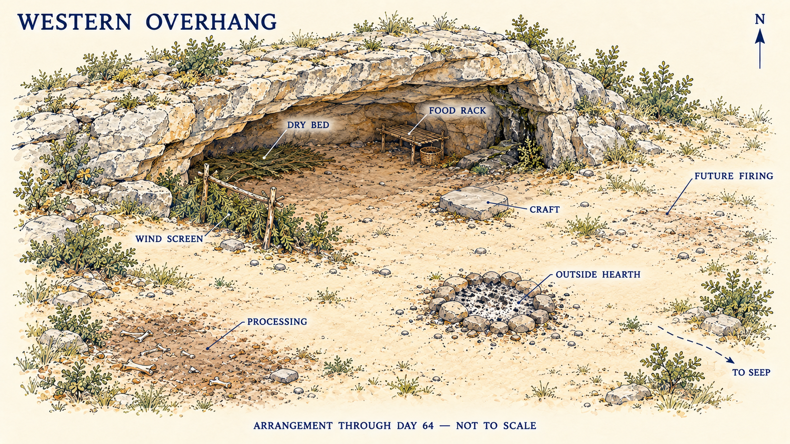

Western Overhang
Position and discovery
A shallow southeast-facing limestone recess on the western slope near the southern foot of the rocky spur. It lies west/northwest and uphill of the original Traveller’s Camp, on the western side of the main river. Day 60 inspects it; Day 61 begins occupation. It is a newly observed site, not the previously inspected Fallback Bench.
The centre has a dry resting strip behind the drip line. A fissured corner near the eastern end shows wetting and is excluded from occupation. No recent occupant signs are seen during the first inspection; that observation grants no universal right of access or promise of rock stability.
Routes and orientation
Provisional ordinary daylight allowances are 15–20 minutes to the old camp, 10–15 minutes southeast along contour ground to the known seep, and roughly 30–45 minutes towards the meeting ground using the established west-of-spur route. Load, weather and the task add time. These are author geography, not measured distances.
The old riverside trap remains at its anchor. Water is carried from the established seep; no new drinking source, river crossing or deep cave appears. Existing resource patches remain finite and their access is not enlarged by moving.
Working arrangement through Day 64
- Dry back-left: sleeping layer and protected personal materials, with space beside the rock face.
- Mouth, northwest/left edge: low fork/rail-supported brush and overlapping bark wind screen. The offset southeast opening and ventilation remain; there is no daub or full front enclosure yet.
- Front-right under the usable roof: clean craft stone.
- Rear-right dry strip: low food-only storage rack, separate from the wet corner.
- Outside and southeast beyond the drip edge: ordinary hearth on open mineral ground.
- Farther southwest/downhill: animal-processing support area; waste farther beyond, away from the seep route.
- Outside northeast of the hearth: separate future firing ground, still unused through Day 64.
Movable tools and supplies transfer on Day 61. The old dirty frame and rejected pot remain at the abandoned camp. Two comparison pieces, both ignition kits and both bark vessels are moved, not duplicated. There is no new drying frame, kiln, supplied fallback site or stored meat.
Use and limits
Rock-Shelter Enclosure describes the construction family. This atlas page fixes its actual local position and stage, not a generic engineering guarantee. Inspect weather, drips, supports, rock changes and water access as ordinary use warrants. The first screen and bed are functional early work; cold-season clothing and further closure remain projects.
The inset is not to scale. Written relationships govern where its oblique symbols are ambiguous. Area icons, including the processing symbol, do not record an extra catch or stock. Keep actual stored food on the raised surfaces described in the narrative rather than inferring load placement from the atlas icon.
Dated changes through Day 69
The inset above remains a Day 64 record. Day 65 adds a short return and a separate movable baffle alongside the southeast entrance, breaking the direct wind path without blocking passage or the high gap. The bed’s compressed outer/hip/shoulder fill is renewed. A small lower left woven bay receives earth/fibre infill on Day 66 and stays under bark/rock rain protection; by Day 69 its limited attachment/drying check is useful. No full mud front or indoor hearth appears.
Clean craft, food rack, excluded wet corner, outside animal processing and unused future firing ground retain their relationships. Day 68’s single spear-caught fish is processed outside and eaten the same day. Day 69’s new point is wrapped separately from its unhafted shaft. These are actual current changes; pictorial symbols in the older inset do not update themselves.
Working additions through Day 74
A small removable pelt support is installed at the separate dirty-material area on Day 70 and receives the Day 70/71 rabbit skins; the old large frame is not moved. Day 71 adds a selected food-only pounding slab and handstone. Day 72 places one greenware pot and witness on a protected front-right craft-side board, separate from food and traffic. No new firing occurs.
The finished composite hand spear is guarded in storage from Day 70. Day 74’s restrained plant-target trial uses inspected clear dry ground outside ordinary work/traffic, not a new permanent range or occupied line. The existing screen, one small earth bay, bed and rear food rack retain their layout. The new pelt foot layers appear after Day 73 fitting; no new trade or spare skin supply is added.
Current objects and processes through Day 79
Day 75 changes the low footwear’s heel-retention route without a new wardrobe silhouette. Day 76 modifies the existing dart A, while the thrower and bowed blank remain their previous objects. Day 78 adds one freshly released narrow deer-skin margin to the separate dirty-work support, promptly fleshed and still drying on Day 79. Its food share has already been eaten.
Day 79 adds a separate four-pronged wooden fishing spear. The old integral wooden-point spear, stone-pointed hand spear and modified dart remain distinct. The food rack, small earth bay, outside hearth and craft-side greenware board retain their arrangement; no firing, indoor combustion, stored meat or new home appears.
Firing ground and cooking support — through Day 84
Days 80–81 allocate the retained deer margin to one small tool guard at the dirty-work support. The craft-side greenware board remains separate. Day 81 clears and prepares the already identified outside northeast firing patch; Day 82 first uses it for the Day 72 pot and one witness half, with cooling in place through Day 83. This is not the ordinary hearth and not a newly discovered valley location.
The ordinary hearth remains southeast beyond the drip edge. Day 84 adds the low three-stone Open Cooking Hearth support here. The one new vessel completes its water and meal trials, then returns washed to protected drying at the craft side. The small witness is a non-food sample; earlier comparison remnants, storage rack, sleeping arrangement and map bearings stay unchanged. The older Day 64 inset remains explicitly dated rather than depicting all later additions.
Closing Moon 3 and the new-moon boundary — Days 85–89
One freshly selected green hazel half-stave receives a separate clean forked drying support beside the craft area, clear of traffic, dirty skins, food and hearth heat. Three new arrow-shaft blanks remain loose for inspection. A short trial cord stays with fibre work. The stave is coarsely shaped but never strung or loaded. No completed bow or arrows are added.
Day 88 repairs a local edge of the existing small daub bay under its retained bark protection. The ordinary hearth and its three low cooking supports retain their outside position. Day 89’s rain leaves the bed and craft-side wood within the dry strip; the new patch remains drying and the single pot gives another sound meal-use result. No additional skin, garment, preserved meat or map landmark is introduced.
Working state — completed Day 94
The same natural roof and modest screen remain. A portable pack frame belongs to the carrier equipment. A new stable fleshing beam and larger open hide support occupy the established southwest/downhill dirty-work side. Temporary separate food-rest surfaces do not turn the rear food rack or clean craft stone into raw-hide work space. The one full skin comes from the solo Day 93 deer; existing clothes remain unchanged. The limited new food is cooked/used by Day 94. No new room, indoor hearth, second pot, new water source or occupied neighbouring site appears.
Clothing and small mesh work — completed Day 99
The natural roof, external ordinary hearth, small screen and single cooking pot remain. The sole full skin leaves its larger dirty-side support for dry working and clean garment assembly; it no longer hangs there as an uncut material reserve. Completed removable sleeve/leg pieces air individually under cover. A small netting project uses the existing clean craft space; its finished hand net drains separately from dirty hide work and bedding. No indoor hearth, new room, new shared site or second pot appears.
Working state — completed Day 104
Small fishing tackle, the existing replacement spindle and one new notched shuttle use the established clean craft space. Fine wet line airs separately; modest repair mesh is kept with the hand net. The heavier full-length string candidate is stored recognisably beside its old short sample, away from the unstrung stave’s separate rests. The natural roof, modest screen, outside hearth, one pot, food area and dirty-material side remain. No room, new hearth, second pot or group occupation is added.
Working state — completed Day 109
The existing small dirty-side support handles the one new rabbit skin, then clears after its Day 108 garment allocation. The bow and recovered practice arrow use the clean rests; two original arrow blanks remain separate and unfinished. The provisional bow is stored unstrung after trials. The new pair of hand pockets airs with clothing. Natural roof, modest screen, ordinary outside hearth and single pot remain; no workshop room, extra pot, new pelt reserve or group provision appears.
Craft state — completed Day 114
The rock roof, modest screen, small daub bay and outside ordinary hearth remain. One new greenware cooking bowl and one comparable witness occupy the protected separate craft board, with direct heat avoided; both are unfired. One plain new wooden spoon serves the old working pot. The bow rests unstrung, its single arrow now with two modest vanes from a new feather lot; the other two blanks remain unfinished. Current complete clothing and both removable warming pockets persist. No building, second working pot, new food cache, spare pelt or group support is added.